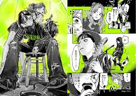

El manga utiliza la identidad como metáfora de crecimiento, resiliencia y aceptación. Estos temas conectan con jóvenes que buscan comprenderse a sí mismos.
| Tema | Ejemplo | Mensaje |
|---|---|---|
| Dualidad | Ranma ½ | Aceptar lo inesperado |
| Autodescubrimiento | Hourou Musuko | Identidad personal |
| Resiliencia | Princess Knight | Luchar contra prejuicios |
| Diversidad | Mangas actuales | Inclusión social |
